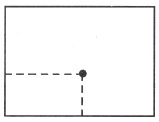
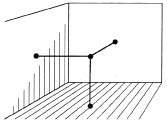
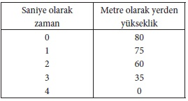
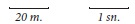
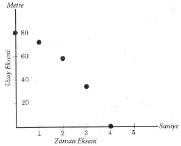
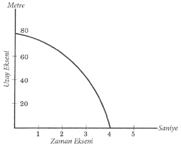

“Fransız Devrimi, 14 Temmuz 1789’da, Paris’te başladı.” Bu tümcede bir olayın yeri ve zamanı bildirilmektedir. Bunu ilk işiten ve “Paris”in ne anlama geldiğini bilmeyen birine şu bilgi verilebilirdi: Paris, yeryüzünde bir kenttir; 2° doğu boylamı ile 49° kuzey enlemi üzerindedir. O zaman, bu iki sayı olayın geçtiği yeri, ve “14 Temmuz 1789” zamanı belirlerdi. Fizikte, bir olayın nerede ve ne zaman geçtiğini belirlemek, tarihte olduğundan daha önemlidir; çünkü bu veriler, nicel bir tanımlamanın temelini oluşturur.
Önceleri, kolaylık olsun diye, yalnız doğru çizgi boyunca olan hareket üzerinde durmuştuk. Koordinat sistemimiz, başlangıcı olan, ama bitimi olmayan eğilip bükülmez bir sırıktı. Bu sınırlı duruma gene başvuralım: Sırık üzerinde ayrı ayrı noktalar alınız. Her noktanın konumu yalnız bir sayı ile, o noktanın koordinatı (konum sayısı) ile belirlenebilir. Bir noktanın koordinatının 3,50 metre olduğunu söylemek, o nokta sırığın başlangıcından 3,50 metre uzaktadır anlamına gelir. Bunun tersine, bana herhangi bir sayı ve ölçü birimi verilirse, o sayıya sırıkta karşılık olan noktayı her zaman bulabilirim. Şöyle diyebiliriz: Sırık üzerinde, her noktaya belirli bir sayı karşılık olur, ve her sayıya karşılık olan belirli bir nokta vardır. Matematikçiler, bu olguyu şöyle anlatırlar: Sırık üzerindeki bütün noktalar, bir-boyutlu bir sürekli oluşturur. Sırık üzerinde, her noktaya istendiği kadar yakın olan bir nokta vardır. Sırığın birbirinden uzak iki noktasının arasını dilediğimiz kadar küçük parçalara bölebiliriz! İşte böyle iki nokta arasındaki uzaklığın istendiği kadar küçük parçalara bölünebilmesi, süreklinin ayırıcı özelliğidir.
Başka bir örnek: Bir düzlem, ya da, daha somut olsun diye, dikdörtgen biçiminde bir masa yüzeyi düşünelim. Bu masa üzerindeki bir noktanın konumu, demin olduğu gibi bir tek sayı ile değil, iki sayı ile belirlenir. [Şekil-59] Bu iki sayı, o nokta ile masanın iki dik kenarı arasındaki uzaklıkları gösterir.

[Şekil-59]
Düzlem üzerinde, her noktaya bir sayı değil, bir sayı çifti karşılık olur; ve her sayı çiftine karşılık olan belirli bir nokta vardır. Başka bir söyleyişle, düzlem iki-boyutlu bir süreklidir. Düzlem üzerinde, her noktaya istendiği kadar yakın noktalar vardır. Birbirine uzak iki nokta, bir eğri ile birleştirilebilir. Bu eğriyi dilediğimiz kadar küçük parçalara bölebiliriz. İkişer sayı ile belirlenebilen iki uzak nokta arasının istendiği kadar küçük parçalara bölünebilmesi, iki-boyutlu bir süreklinin de ayırıcı özelliğidir.
Bir örnek daha: Odanızı koordinat sisteminiz sayıyorsunuz. Bu, bütün konumları odanın hiç kımıldamayan duvarlarına göre belirlemek istemeniz demektir. Tavandan sarkan lambanın alt ucunun konumu, lamba durgunsa, üç sayı ile tanımlanabilir. [Şekil-60] Bunlardan ikisi, birbirine dik iki duvardan olan uzaklığı, üçüncüsü ise döşemeden ya da tavandan uzaklığı gösterir. Uzayda, her noktaya belirli üç sayı karşılık olur, ve her sayı üçlüsüne karşılık olan belirli bir nokta vardır. Ve gene, her biri üç sayı ile belirlenen uzak iki noktanın arası, istendiği kadar küçük parçalara bölünebilir. Ve bu, üç-boyutlu bir süreklinin de ayırıcı özelliğidir.

[Şekil-60]
Ama bütün bunların fizikle pek az ilgisi vardır. Fiziğe yeniden dönmek için, maddesel taneciklerin hareketi üzerinde durulmalıdır. Doğadaki olayları gözlemek ve öngörmek için, fiziksel olayların yalnız yerlerini değil, zamanlarını da dikkate almalıyız. Gene çok basit bir örnek alalım:
Bir tanecik gibi düşünülebilecek çok küçük bir taş, bir kuleden aşağı bırakılıyor. Kulenin yüksekliği, diyelim ki 80 metre. Galilei’den beri, düşmeye başlayan bir taşın istenen her andaki koordinatını önceden bildirebilmekteyiz. Taşın 0, 1, 2, 3, 4 saniye sonraki konumlarını gösteren zaman çizelgesi şöyledir:

“Zaman çizelgesi”nde her biri iki sayı ile, uzay ve zaman koordinatları ile gösterilen beş olay yazılıdır. Birincisi, taşın sıfırıncı saniyede, yerden 80 metre yükseklikten düşmeye başlamasıdır. İkincisi, dimdik duran ölçme sırığımızın (burada kulenin) yerden 75 metre yükseklikteki noktası ile taşın rastlaşmasıdır. Bu, bir saniye sonra olmaktadır. Son olay ise, taşın yere çarpmasıdır.
“Zaman çizelgemiz”den edindiğimiz bilgiyi, başka bir biçimde de gösterebilirdik. “Zaman çizelgesi”ndeki beş sayı çiftini, bir düzlemin beş noktası olarak niteleyebilirdik. Önce bir ölçek saptayalım. İki doğru parçası alalım. Bunlardan biri 20 metreyi, öbürü 1 saniyeyi göstersin. [Şekil-61] Şöyle:

[Şekil-61]
Sonra birbirine dik iki çizgi çizelim. Yatay çizgiye zaman ekseni, düşey olana uzay ekseni diyelim. [Şekil-62]

[Şekil-62]
“Zaman çizelge”mizin, bu uzay-zaman düzleminde beş nokta ile gösterilebileceği anlaşılıvermektedir.
Noktaların uzay ekseninden uzaklıkları, “zaman çizelgesi”nin birinci sütununda olduğu gibi, zaman koordinatlarını, ve zaman ekseninden uzaklıkları ise uzay koordinatlarını göstermektedir.
Bir ve aynı şey, iki farklı biçimde anlatılıyor: “Zaman çizelgesi” ile ve düzlem üzerindeki noktalarla. Bunların biri öbüründen çıkarılabilir. Bu iki anlatım yolundan hangisi hoşumuza giderse onu seçebiliriz; çünkü ikisi eşdeğerdir.
Şimdi bir adım daha ilerleyelim. Konumları her saniye için değil, ama örneğin her yüzde bir ya da binde bir saniye için bildiren daha iyi bir “zaman çizelgesi” düşünelim. O zaman, uzay-zaman düzlemimiz üzerinde pek çok nokta bulunacaktır. Sonunda, konumlar her an için bildirilirse, ya da, matematikçilerin dediği gibi, uzay koordinatları zamanın bir fonksiyonu gibi verilirse, birbirini izleyen noktalar sürekli bir çizgi olur. Bundan dolayı, son çizdiğimiz şekil [Şekil-63], ilk şekil gibi hareketi parça parça göstermez, tersine, kesiksiz bir bütün olarak gösterir.

[Şekil-63]
Dimdik duran ölçü sırığı (kule) boyunca hareket, yani bir-boyutlu uzaydaki hareket, burada, iki-boyutlu bir uzay-zaman süreklisinde, bir eğri olarak gösterilmektedir. Uzay-zaman süreklimizin her noktasına bir sayı çifti karşılık olmaktadır. Bunların biri zaman, öbürü uzay koordinatıdır. Bunun tersine, uzay-zaman düzlemimizde, bir olayı belirleyen her sayı çiftine karşılık olan belirli bir nokta vardır.
Komşu iki nokta, yerleri ve zamanları pek az farklı iki olayı göstermektedir.
İzlediğimiz anlatım yoluna şöyle itiraz edebilirsiniz: Bir zaman birimini bir doğru parçası ile göstererek bir-boyutlu iki sürekliden iki-boyutlu bir sürekli elde etmek için zamanı uzay ile mekanik olarak kaynaştırmanın pek az anlamı vardır. Ama o zaman, örneğin geçen yaz boyunca New York’ta saptanan sıcaklık değişmelerini ya da son birkaç yıllık geçim giderlerini gösteren bütün grafiklere de itiraz etmiş olursunuz; çünkü onların çiziminde de aynı yöntem kullanılmaktadır. Sıcaklık grafiklerinde, bir-boyutlu sıcaklık süreklisi ile bir-boyutlu zaman süreklisi birleştirilerek iki-boyutlu sıcaklık-zaman süreklisi elde edilmektedir.
Gene 80 metre yükseklikteki kuleden aşağı bırakılan taneciğe dönelim. Onun hareketini gösteren grafik çok kullanışlıdır; çünkü istenen her an için taneciğin konumunu belirlemektedir. Taneciğin hareketini, bir de onun nasıl hareket ettiğini bilerek yorumlayalım. Bunu iki ayrı yoldan yapabiliriz.
Daha önce öğrendiğimiz birinci anlayışa göre konumu zamanla değişen taneciğin hareketi, bir-boyutlu uzayda olayların birbirini izlemesi olarak düşünülmektedir. Konumların zamanla değiştiği dinamik bir düşünüşe başvurarak zaman ile uzayı kaynaştırmıyoruz.
Ama aynı hareketi, iki-boyutlu uzay-zaman süreklisindeki eğriyi göz önünde tutarak; başka biçimde, yani statik (dingin) olarak da düşünebiliriz. O zaman hareket, bir-boyutlu uzay süreklisinde değişen bir şey olarak değil, iki-boyutlu uzay-zaman süreklisinde olan, orada yer alan bir şey olarak nitelenir.
Bu iki anlayış tümüyle eşdeğerdir. İkisinden birini seçmek, yalnızca bir biçim ve beğeni sorunudur.
Bu iki hareket anlayışı üzerine şimdiye dek söylenenlerin, ilişkinlik (relativity) teorisi ile hiç ilgisi yoktur. Klasik fizik, hareketi uzay-zamanda değil de, uzayda geçen bir olaylar zinciri gibi gösteren dinamik yorumu benimsemiş olmakla birlikte, bu yorumların ikisi de aynı haklılıkla kullanılabilir. Ama ilişkinlik (relativity) teorisi bu görüşü değiştirmiştir. Teori, hareketi statik olarak nitelemeyi kesinlikle daha üstün tutmuştur. Çünkü hareketin böyle nitelenmesi daha yararlıdır ve gerçekliği daha nesnel olarak yansıtmaktadır. Gene de yanıtlanması gereken bir soru kalıyor: Klasik fizik bakımından eşdeğer olan bu iki anlayış, neden ilişkinlik (relativity) teorisi bakımından eşdeğer değildir?
Birbirine ilişkin (relative), bir-biçimli hareket eden iki KS’ye yeniden başvurulursa, bu sorunun yanıtı anlaşılacaktır.
Klasik fiziğe göre, birbirine ilişkin (relative), bir-biçimli hareket eden iki KS’deki gözlemciler, belirli bir olay için farklı uzay koordinatları kullanacaklardır, ama başvurdukları zaman koordinatı tektir ve aynıdır. Örneğimizde, taneciğin yere çarpması, bizim seçtiğimiz KS’de, “4” zaman koordinatı ve “0” uzay koordinatı ile belirlenmektedir. Klasik fiziğe göre, taş, seçilen KS’ye ilişkin (relative) ve bir-biçimli hareket eden gözlemci için de, gene dört saniye sonra yere ulaşacaktır. Ama bu gözlemci, zaman koordinatı onun için ve birbirine ilişkin (relative) ve bir-biçimli hareket eden bütün öbür gözlemciler için aynı olmakla birlikte, kendi KS’sine olan uzaklığa başvuracak ve, genellikle, yere çarpma olayını farklı uzay koordinatları ile saptayacaktır. Klasik fizik, bütün gözlemciler için yalnız bir “salt” (absolute) zaman akışı tanır. İki-boyutlu sürekli, her KS için bir-boyutlu iki sürekliye, uzay’a ve zaman’a ayrılabilir. Zamanın “salt” karakterinden ötürü, klasik fizikte, “statik” hareket anlayışından “dinamik” hareket anlayışına geçişin nesnel bir anlamı vardır.
Ama klasik dönüşümün fizikte genel olarak kullanılmaması gerektiğine kesinlikle inandığımızı daha önce söylemiştik. Klasik dönüşüm, uygulamada küçük hızlar için gene kullanışlıdır, ama köklü fiziksel sorunları çözmeye elvermez.
İlişkinlik (relativity) teorisine göre, taşın yere çarpma zamanı, bütün gözlemciler için aynı değildir. Zaman koordinatı ile uzay koordinatı, iki KS’de başka başka olacak, ve ilişkin (relative) hız ışık hızına yakınsa, zaman koordinatındaki değişiklik apaçık göze çarpacaktır. İki-boyutlu sürekli, klasik fizikte olduğu gibi bir-boyutlu iki sürekliye ayrılamaz. Başka bir KS’deki uzay-zaman koordinatlarını belirlerken, uzayı ve zamanı ayrı ayrı düşünmeliyiz. İki-boyutlu sürekliyi bir-boyutlu iki sürekliye ayırmak, ilişkinlik (relativity) teorisi bakımından, nesnel anlamı olmayan keyfi bir işlem gibi görünmektedir.
Bütün bu söylediklerimizi doğru çizgi boyunca olmayan hareket için de geçerli olacak biçimde genelleştirmek kolaydır. Gerçekte, doğadaki olayları tanımlamak için iki değil, dört sayı kullanılmalıdır. Nesnelerin ve onların hareketlerinin aracılığı ile kavranan uzayımız, üç-boyutludur ve konumlar üç sayı ile belirlenir. Dördüncü sayı, olay anını belirlemeye yarar. Her sayı dörtlüsüne karşılık olan belirli bir olay vardır. Bundan dolayı, fiziksel olaylar âlemi bir dört-boyutlu sürekli oluşturur. Bunun anlaşılmaz bir yanı yoktur. Ve bu, klasik fizik ve ilişkinlik (relativity) teorisi için aynı ölçüde doğrudur. Birbirine ilişkin (relative) hareket eden iki KS dikkate alınınca, gene bir farklılık ortaya çıkar. Hareket eden odanın içindeki ve dışındaki gözlemcilerin aynı olayların uzay-zaman koordinatlarını belirlemeleri gereksin. Klasik fizikçi, dört-boyutlu sürekliyi gene üç-boyutlu sürekliye ve bir-boyutlu sürekliye ayırır. Eski fizikçi, yalnız uzay dönüşümünü ele alır; çünkü onun için zaman “salt”tır. Dört-boyutlu evren süreklisini uzay ve zaman süreklilerine bölmeyi doğal ve kullanışlı bulur. Oysa ilişkinlik (relativity) teorisi bakımından, bir KS’den öbürüne geçilirken, zaman da uzay gibi değişir, ve Lorentz dönüşümü, olayların dört-boyutlu âleminin dört-boyutlu uzay-zaman süreklisinin özelliklerini dikkate alır.
Olaylar âlemi, dinamik olarak üç-boyutlu uzayda bir dönüşüm süreci gibi tanımlanabilir. Ama statik olarak, dört-boyutlu bir uzay-zaman süreklisi gibi de tanımlanabilir. Klasik fizik bakımından, biri dinamik ve öbürü statik olan bu iki tanım, eşdeğerdir. Oysa ilişkinlik (relativity) teorisi bakımından, statik olanı daha kullanışlı ve daha nesneldir.
Bununla birlikte, istersek, ilişkinlik (relativity) teorisinde de dinamik tanımı kullanabiliriz. Yalnız, zaman artık “salt” (absolute) olmadığı için, bu uzaya ve zamana ayırma işleminin nesnel anlamı olmadığını unutmamalıyız. Bundan sonraki sayfalarda “statik” anlatımı değil, gene “dinamik” anlatımı kullanacağız. Ama bunun sınırlarını hep göz önünde tutmalıyız.